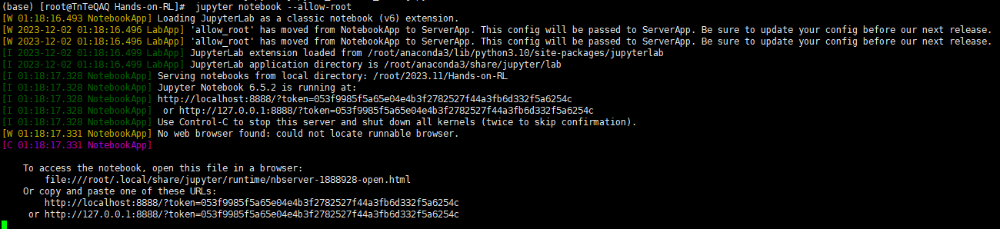

随时随地访问jupyter，畅享加班生活。
这个网上教程太多了，就不讲了
正常开启是这样的
可以看到它开在了本地
————————————————————————————————————
写完了看别人博客的时候才发现根本不用这么麻烦
直接
jupyter notebook --no-browser --ip 0.0.0.0
就可以把jupyter开在服务器上
直接就可以跳过3、4、5步
————————————————————————————————————
在控制台输入
jupyter notebook –generate-config
如果是首次输入会在默认目录下生成jupyter的配置文件
如果已经有配置文件了就会询问是否覆盖，同时也会显示出文件的地址
vim /root/.jupyter/jupyter_notebook_config.py
查找c.NotebookApp.ip

把前面的注释去掉，然后改为
c.NotebookApp.ip = '0.0.0.0'
保存退出

可以看到这里已经变成了主机名
这时候去防火墙放行端口就可以在服务器上访问jupyter了

记得带上token
本来这步是没啥必要的
但是自己就是又菜又爱玩，想去试试能不能开这个服务，然后花了好几个小时去倒腾systemd奇怪的环境配置（主要还是被conda被刺了）
最后还是选择直接找到conda环境里的python，然后用绝对路径启动
没用conda的话可以参考：
搭建 Jupyter Notebook 服务（基于 Systemd 和 Nginx） - 循环展开 - 博客园 (cnblogs.com)
如果装了conda，具体步骤如下：
先确认自己用的conda的环境，如果是base环境python的位置和其他环境的不太一样
找到conda的位置
这里可以用
whereis conda

（这里用第一个路径）
找到python的位置
一般base环境的python和conda一样在bin下面
在图上就是**/root/anaconda3/bin/python**这个位置
[conda的安装位置]/bin/python
如果是其他的环境就在anaconda3下的envs里
我这只新建了一个环境所以只有一个文件夹

到环境文件夹下的bin里就能看到python程序
在图上就是**/root/anaconda3/envs/idsgame/bin/python**
[conda的安装位置]/envs/[环境名]/bin/python
创建systemd任务
vim /etc/systemd/system/jupyter.service
向里面写入：（[ ]中的内容根据自己的实际情况进行替换！！！）
[Unit]
Description = jupyter server
After = network.target syslog.target
Wants = network.target
[Service]
Type = simple
WorkingDirectory=[jupyter开启的根目录]
ExecStart=[python的位置] -m jupyter notebook --allow-root
Restart=always
[Install]
WantedBy = multi-user.target
启动服务
systemctl start jupyter
查看状态
systemctl status jupyter

绿了就成功了，然后可以从里面看到登录用的token值